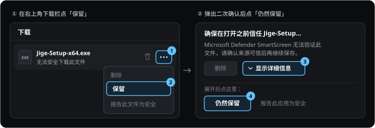
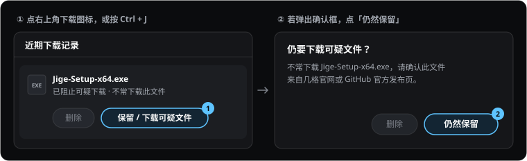
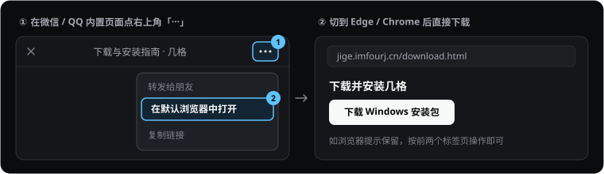
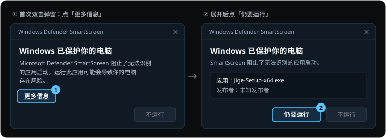

检测到你正在微信或 QQ 内置浏览器中打开
内置浏览器通常无法直接下载 Windows 安装包。请点右上角 ···，选择 在默认浏览器中打开（如 Edge 或 Chrome），再回到本页下载。
你当前似乎不在 Windows 电脑上
几格是 Windows 10 / 11（64 位）桌面小工具。你可以先复制下载页链接发到电脑打开，或者先去 GitHub 点个 Star 收藏。
下载并安装几格
几格是免费开源的个人软件，安装包没有购买商业代码签名。在 Windows 10 和 Windows 11 上，浏览器下载和首次打开时可能会各拦一次——这是正常现象，照下面两步点一下就能装好。
已开始下载 Jige-Setup-0.2.27-x64.exe。如果浏览器右上角弹出拦截提示，请直接看下方第 1 步。
国内镜像暂时读不到最新版本信息，也可以 从 GitHub 下载最新正式版。



-
找到右上角被拦下的下载条目
点上方下载按钮后，右上角会弹出「无法安全下载」或「通常不会下载」。如果提示条已经消失，按 Ctrl + J 打开下载列表。
-
把鼠标移到文件名上，点「保留」
将鼠标悬停在
Jige-Setup-0.2.27-x64.exe这一条上，点右侧出现的 ···（更多操作），选择「保留」。悬停在文件上···保留
-
在二次确认框里点「仍然保留」
Edge 会再弹一次确认窗（默认高亮按钮是「删除」）。先点下面的「显示详细信息」展开，再点「仍然保留」。
显示详细信息仍然保留
-
打开下载好的安装包
保存完成后，点列表里的「打开文件」，或去「此电脑 → 下载」文件夹双击运行，继续看下面第 2 步。
-
打开下载气泡或按 Ctrl + J
点击下载后，右上角可能会提示「已阻止可疑下载」或「无法安全下载」。点右上角下载图标，或直接按 Ctrl + J 打开「下载内容」。
-
点「保留」并确认「仍然保留」
在
Jige-Setup-0.2.27-x64.exe旁点「保留」或「下载可疑文件」；如果弹出二次确认框，再点「仍然保留」。Ctrl + J保留 / 下载可疑文件仍然保留
-
双击安装包运行
保存完成后，点「在文件夹中显示」或直接双击该安装包，继续看下面第 2 步。
-
微信 / QQ 内置浏览器
内置浏览器经常会拦截
.exe或下完找不到文件。请点窗口右上角菜单，切到 Edge 或 Chrome 再下载。···在默认浏览器中打开
-
Firefox（火狐浏览器）
点右上角下载箭头，点开被标记的安装包条目，再点「允许下载」。
下载面板允许下载
-
360 / QQ / 夸克 / 搜狗等浏览器
若提示「未知来源」或「风险文件」，按 Ctrl + J 打开下载管理，在该文件旁选「继续下载」或「保留」，保存后双击运行。

-
点「更多信息」，不要点「不运行」
双击
Jige-Setup-0.2.27-x64.exe后会弹出「Windows 已保护你的电脑」窗口。点正文下方那行不太起眼的文字链接「更多信息」。Windows 已保护你的电脑更多信息
-
点击新出现的「仍要运行」
展开后会显示应用名与「未知发布者」，同时下方会出现「仍要运行」按钮，点击它即可进入几格安装向导。
仍要运行
-
几秒安装完成，之后不用再折腾
默认装在当前用户目录，不需要管理员权限，不会弹 UAC 盾牌。装好以后，几格每天自动检查一次更新，新版下载并校验好后会在面板提示，点一下就静默升级，不用再重复这两步。
为什么会拦截，怎么核对安全
要让 Windows 完全不弹提示，需要向证书机构按年购买商业代码签名并积累下载信誉。几格是个人开源项目，暂未购买商业签名，但构建全程公开透明。
- 每个正式版都由 GitHub Actions 公开流水线从源码直接编译打包，国内镜像与 GitHub Release 的安装包完全相同。
- 只向 USB 接收器发只读电量查询，不修改设备设置，也不上传任何本机数据；联网只为每天检查一次更新，可在「检查更新」页关闭。
不放心的话，下载后可在 PowerShell 运行下面命令，与 SHA256SUMS.txt 逐字核对：
Get-FileHash "$HOME\Downloads\Jige-Setup-0.2.27-x64.exe" -Algorithm SHA256常见卡点排查
Windows 11 提示「智能应用控制已阻止此应用」，没有「仍要运行」？
少数全新安装的 Windows 11 开启了「智能应用控制（Smart App Control）」强制模式，会直接禁止运行所有未签名程序且不提供「仍要运行」入口。可在「Windows 安全中心 → 应用和浏览器控制 → 智能应用控制」查看状态。注意：Windows 规定关闭该功能后无法直接重新打开（需重装系统），请按自身需求权衡；不想关闭的话，也可以从 GitHub 源码自行编译。
被 Windows Defender 或火绒 / 360 等杀毒软件误报隔离了？
刚发布的新版本未签名安装包偶发会被启发式规则误报。建议先用左侧的 SHA-256 命令确认文件未被篡改，再到「Windows 安全中心 → 病毒和威胁防护 → 保护历史记录」（或杀软隔离区）里将安装包还原并允许运行。
点下载没反应，或者下载速度很慢？
页面主按钮走国内镜像（download.imfourj.cn），一般无需代理。若镜像临时波动，可直接点击顶部「从 GitHub 下载」获取同一份正式版安装包。
下载完成了，找不到安装包存在哪了？
在浏览器里按 Ctrl + J 打开下载记录，点文件旁的「在文件夹中显示」就能直接定位。Windows 默认保存在「此电脑 → 下载」文件夹中。
以后每次更新版本，都要再走一遍这两步吗？
不需要。装好之后几格会每天自动检查更新，在后台下载并核对大小和 SHA-256，面板提示后点一下就静默升级，不会再经过浏览器拦截。
看明白了？现在开始下载。
按上面第 1 步和第 2 步点一下即可装好，默认安装在当前用户目录，不需要管理员权限。